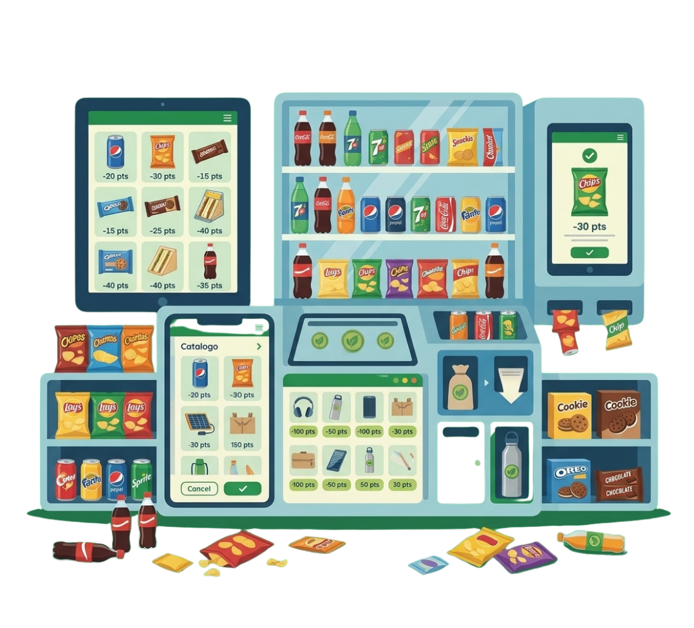
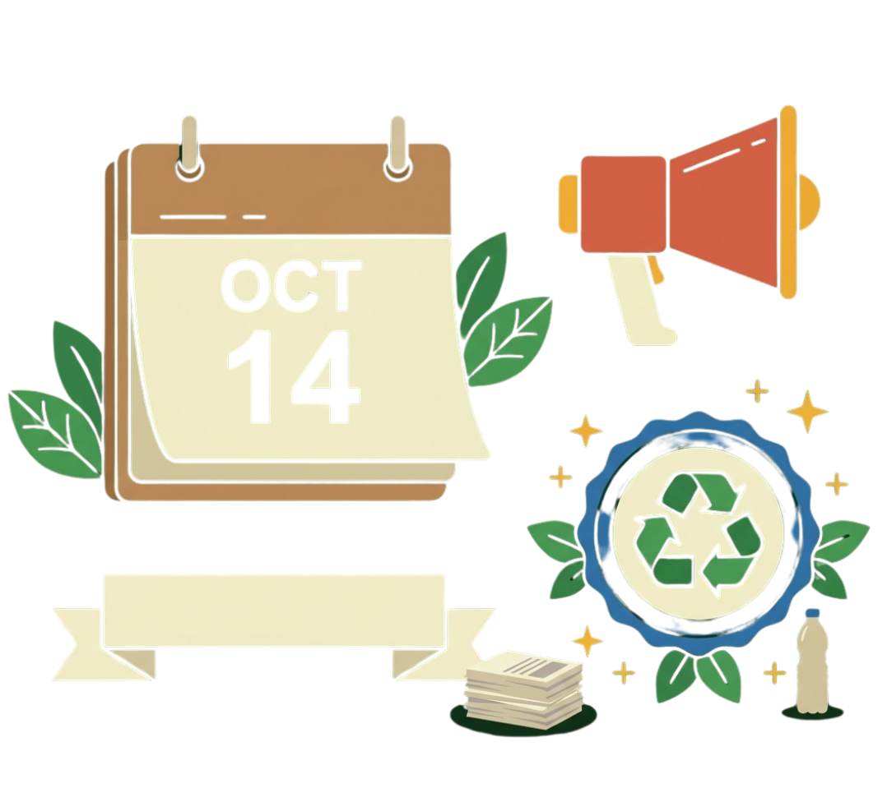
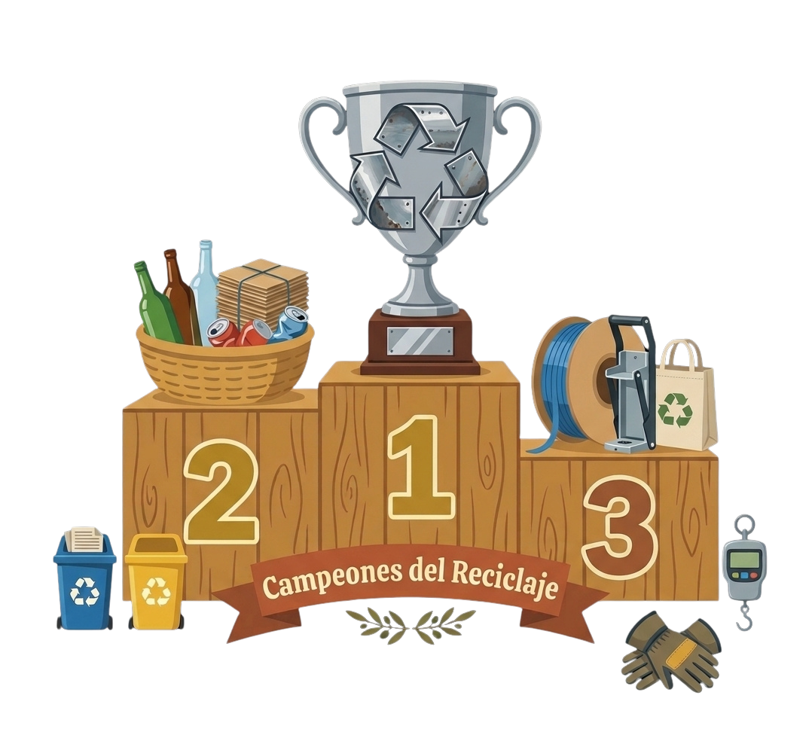
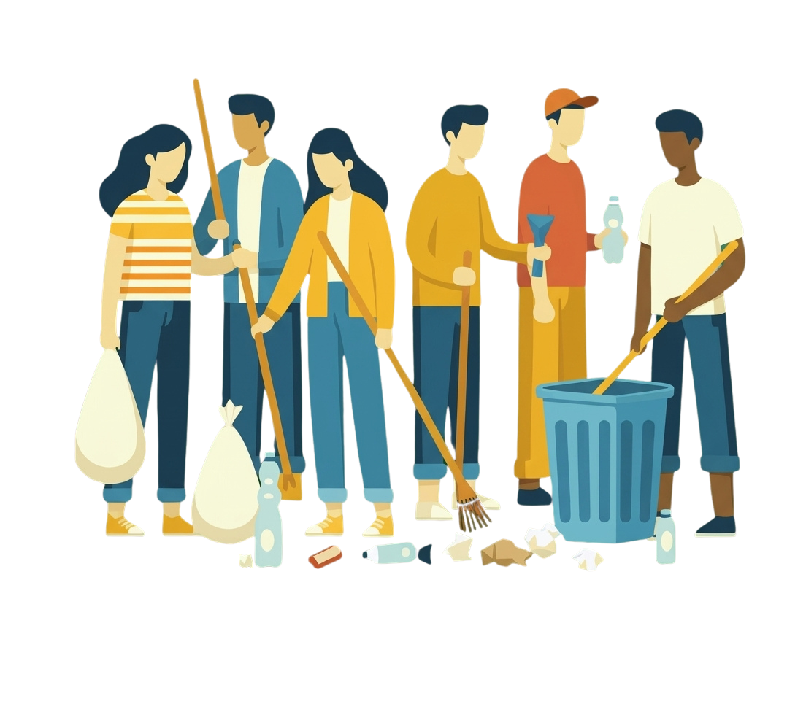
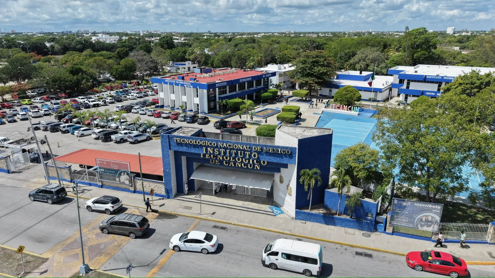
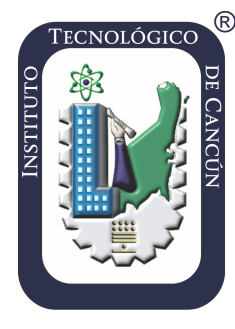

Eco-Puntos
Recicla hoy, gana Eco-Puntos
Cada kilo de PET, aluminio, cartón y más que entregas se valida y se convierte en puntos para tu billetera.

Cada kilo de PET, aluminio, cartón y más que entregas se valida y se convierte en puntos para tu billetera.
Artículos, constancias y beneficios te esperan en el catálogo de canje. Mientras más reciclas, más alto llegas.

Dentro o fuera del campus: súmate a las campañas, entrega tu material y recibe puntos extra.

Cada mes reconocemos a quienes más Eco-Puntos suman. ¿Serás el siguiente?

Estudiantes trabajando juntos por un entorno más sustentable. Tu aportación cuenta.

Quiénes somos
Algoritmo Verde es una iniciativa tecnológica y comunitaria diseñada para transformar la cultura del reciclaje dentro del campus universitario. Convertimos cada acción sustentable en beneficios tangibles para los estudiantes.
Nacidos en el Tecnológico Nacional de México, Campus Cancún, impulsamos la economía circular mediante la digitalización de entregas de residuos, el seguimiento de campañas ambientales y el reconocimiento público a quienes lideran el cambio sustentable en nuestra región.


Campus CancúnEco-Puntos
Entrega tu material en un punto de acopio o en una campaña, valídalo y acumula puntos para canjear.
Cuadro de honor
Cada mes destacamos al reciclador con más puntos y la idea ecológica con mayor respaldo.
Ing. Ambiental · 5.º semestre
Aprovechar los residuos orgánicos de la cafetería para producir composta y alimentar un huerto vertical con hierbas y hortalizas que se usen en el propio comedor.
Impacto colectivo
Números acumulados de toda la comunidad, actualizados con cada entrega y cada campaña.
La plataforma
Empieza por reciclar: es la forma más rápida de sumar Eco-Puntos.
Ubica puntos de acopio, registra tus entregas con foto y gana Eco-Puntos por cada kilo.
AccederInscríbete en jornadas de plantación y da seguimiento a los árboles adoptados en el mapa.
AccederPublica propuestas, comenta y vota. La más respaldada se vuelve la Idea del Mes.
AccederAcumula puntos por cada acción y canjéalos por beneficios y reconocimientos.
AccederCampañas
Dentro o fuera del campus: reserva la fecha, participa y suma Eco-Puntos.
Crea tu cuenta en menos de un minuto y empieza a ganar Eco-Puntos con tu primer kilo reciclado.